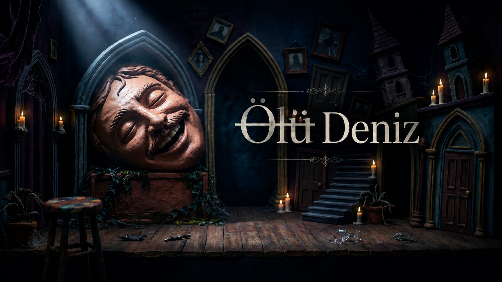
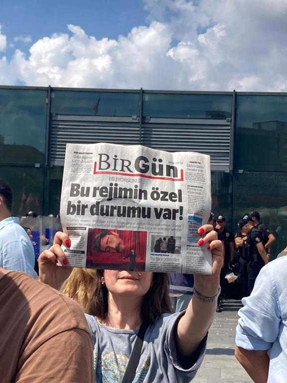

Video YouTube’a düştü
Gösterinin kaydı YouTube’da yayımlandı; AP 3 Temmuz itibarıyla yaklaşık 9,5 milyon izlenmeden söz ediyor.

3 Temmuz 2026
Deniz Göktaş "Ölü Deniz" stand-up gösterisini YouTube'a yükledi; günler sonra yurt dışı dönüşünde İstanbul Havalimanı'nda gözaltına alındı ve 3 Temmuz'da tutuklandı. Peki bu iş buraya nasıl geldi? İşte kamuya yansıyan haberler ve tam metin üzerinden yapılan çözümleme.
Tutuklama Dediğin Cezalandırma Değildir (Ama Bizde Öyle). Ceza hukukunda tutuklama aslında kaçmasınlar ya da delil karartmasınlar diye bir önlem. Kamuya yansıyan tabloda temel delil zaten çevrimiçi gösteri kaydı ve Göktaş yurt dışı dönüşünde havalimanında gözaltına alınıyor. Buna rağmen tutuklama seçilince mesele "önlem mi, peşin ceza mı?" sorusuna dönüyor.
Şakaların Sadece Ufak Bir Kısmı Dert Olmuş. Tematik bölümlemeye göre savcılık sorgusunda gündeme geldiği aktarılan 10 pasaj, 34 bölümlük gösterinin sadece bir kısmına denk geliyor. Geri kalan geniş alanda Deniz; sınıf çelişkilerini, kendi ailesini, futbolu, Kadıköy nefretini ve medya figürlerini anlatıyor.
Başka Çare Yok Muydu Sahiden? Delil diye tartışılan kayıt zaten yayında. Peki niye hemen en ağır koruma tedbiri seçiliyor? Yurt dışı yasağı ve imza gibi adli kontrol seçenekleri varken tutuklama kararının ölçülülüğü asıl tartışma noktası.
Zaman Çizelgesi
Gösteri 24 Haziran'da YouTube'a yüklendi; AP'nin aktardığına göre 2 Temmuz'da İstanbul Havalimanı'nda gözaltına alındı, 3 Temmuz'da da tutuklandı. Kamuya yansıyan takvim böylece 9 günlük bir hatta oturuyor.
AP'nin 2 Temmuz haberinde, gösteriden sosyal medyaya yüklenen ve Erdoğan'a dönük şakaları da içeren bazı kesitlere daha önce erişim engeli getirildiği aktarılıyor. Aynı haber, Sabah'ın "dinî değerlere ilişkin şakalardan rahatsız olan onlarca kişinin şikâyette bulunduğu" bilgisini verdiğini yazıyor.
3 Temmuz tarihli AP haberinde dosyanın "dinî değerleri aşağılama" ve Cumhurbaşkanı Recep Tayyip Erdoğan'a hakaret iddialarıyla yürüdüğü; Göktaş'ın sorguda yaklaşımının hiciv olduğunu ve dinî değerleri veya Cumhurbaşkanı'nı aşağılama kastı taşımadığını söylediği aktarılıyor.

Gösterinin kaydı YouTube’da yayımlandı; AP 3 Temmuz itibarıyla yaklaşık 9,5 milyon izlenmeden söz ediyor.
AP, sosyal medya kesitlerine erişim engeli getirildiğini ve haberlerde onlarca şikâyetten söz edildiğini aktarıyor.
AP, savcıların gösteri hakkında soruşturma başlattığını ve dosyada dinî değerler ile Cumhurbaşkanına hakaret iddialarının bulunduğunu yazıyor.
Deniz, yurtdışından döner dönmez havalimanında gözaltına alındı.
Savcılık sorgusunun ardından hâkimlik tutuklama kararı verdi.
Olayın bu kadar hızlı gelişmesi, sosyal medya kesitleri ve şikâyetlerin yargı sürecini nasıl tetiklediğini gösteriyor. Bu dava sadece "şakanın sınırı nerede başlar" sorusunu değil, tutuklamanın ne zaman peşin cezalandırmaya dönüştüğü sorusunu da öne çıkarıyor.
Hukuk kitabına göre birini tutuklamak için ortada ciddi şüphe olması yetmez; kaçma ihtimalinin bulunması veya delil karartması gerekir. Bu dosyada tartışılan ana materyal çevrimiçi gösteri kaydıysa, "başka çare yokmuş gibi en ağır yoldan içeri atmak niye?" sorusu meşru kalıyor.
Metin anatomisi
Sorguda gündeme geldiği aktarılan 10 pasaj, 11 bin kelimelik gösteri bölümlemesinin sadece küçük bir kısmı. Zaten mizah dediğin şey bütünüyle anlaşılır; şakaları cımbızlayıp cımbızlayıp "bak burada ne demiş" dersen, adamın asıl söylemek istediğini tamamen çarpıtmış olursun.
"Ölü Deniz" aslında 34 parçadan oluşan dev bir bütün. Gösterinin temalarına baktığımda, sadece siyasi şakalar yok; günlük ilişkiler, popüler kültür saçmalıkları ve kimlik kafa karışıklıkları gibi acayip geniş bir yelpaze var.
Bu sınıflandırmanın gösterdiği tablo şu: Siyaset gösterinin yaklaşık %20'sini kaplıyor. Gündelik hayat, medya ve kültür başlıkları ise birlikte %54'ün üzerinde. Yani Deniz siyasi şaka yaparken bile bunu kuru bir propaganda gibi değil; kendi hayatı, okuduğu okul, medya figürleri ve toplumdaki çelişkiler üzerinden anlatıyor. Bu tablo, gösterinin tek bir gruba veya inanca dönük düz bir metin gibi okunamayacağını gösteriyor.
Hicvin hedef haritası
Deniz gösteride tek bir kesime yüklenmiyor. İktidarı da, muhalefeti de, seküler tayfayı da, muhafazakarları da, ünlü hocaları da ve en çok da kendisini diline doluyor. Yani hedef tahtasında herkes var.
Gösteride Ekrem İmamoğlu'ndan Ümit Özdağ'a, Fatih Altaylı'dan Celal Şengör'e kadar bir ton popüler figürün taklidini yapıyor veya onları tiye alıyor. Göçmen tartışmalarından tutun, entelektüellerin o havalı pozlarına kadar her şeye sataşıyor. Hal böyle olunca, bu mizahı alıp "belli bir halk kesimine karşı nefret yayıyor" (TCK 216) diye yorumlamak cidden zorlama kaçıyor.
| Kime sataşıyor? | Kimler var? | Mizah taktiği |
|---|---|---|
| Siyasetçiler | Erdoğan, İmamoğlu, Özgür Özel, Ümit Özdağ | Rolleri tersyüz etme, kişisel gelişim parodisi, hapishane ve seçim geyikleri |
| Medya ve popüler hocalar | Fatih Altaylı, Celal Şengör, İlber Ortaylı | Televizyon dili, uzman havası ve "bunlar niye linç yemiyor" sorusu |
| Toplumsal gruplar | Sekülerler, muhafazakarlar, milliyetçiler, taraftarlar | Seyircinin kendi önyargılarını sahneden yüzüne vurma, ters köşeler |
| Kendisi ve ailesi | Psikoloji mezuniyeti, babası, sevgilisi, sınıf atlama çabası | Kendini rezil etme, başarısızlık hikayeleri, otobiyografik abartılar |
Mizahın olayı zaten bu; seyirciyi önce bir rahatlatıp sonra kendi önyargılarıyla tokatlamak. Mahkemenin bu sanatsal üslubu görmezden gelip şakaların düz mahkeme ifadesi gibi okuması, ifade özgürlüğünü de mizahı da daracık bir alana hapsetmek demek.
Asıl Soru
Kamuya açık haberlerde "onlarca şikâyet" ifadesi geçiyor; tek başına şikâyet sayısı ise kamu barışının bozulduğunu göstermeye yetmez. Yasa, birilerinin canının sıkılmasını engellemeyi değil, kamu düzeninin gerçekten fiziki olarak bozulmasını engellemeyi hedefler.
Cumhurbaşkanlığı makamı, ülkenin en büyük siyasi gücü. AİHM çizgisi de siyasetçilerin sıradan kişilere göre daha geniş eleştiriye katlanması gerektiğini söyler. Bu yüzden "diktatör" kelimesi gibi ağır siyasal nitelemelerde bağlam, hiciv formu ve şiddete çağrı olup olmadığı belirleyici hale gelir.
Tutuklama kararı, olayı çözmek yerine henüz mahkeme bile kurulmamışken faturayı Deniz'e ödetiyor. Buradaki mesele şakaları beğenip beğenmemek değil, yargının yasayı düzgün uygulayıp uygulamadığı.
Şakanın komik olup olmadığı veya ahlaki sınırları sabaha kadar tartışılabilir. Ama bir insanı mahkemesiz tutuklayıp içeri tıkmak için kelimelerin ötesinde ciddi gerekçeler olmalı. 'Ölü Deniz' dosyasında bu gerekçelerin olmaması, herkesin hukuki güvenliği açısından soru işaretleri yaratmaya devam ediyor.